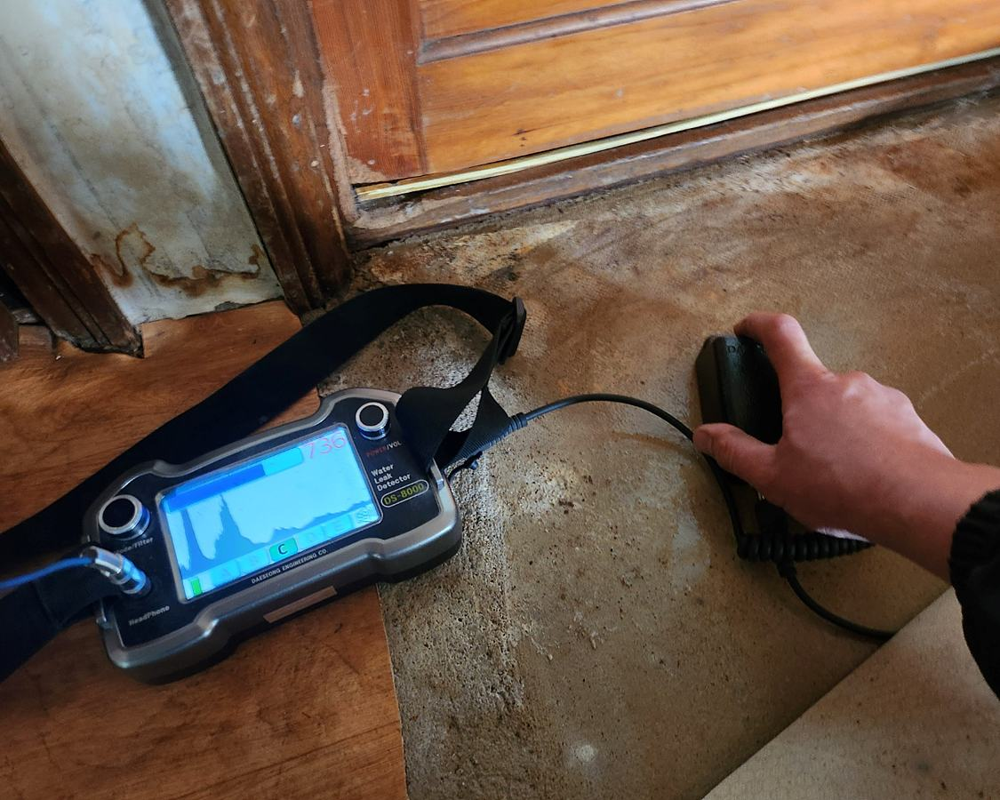
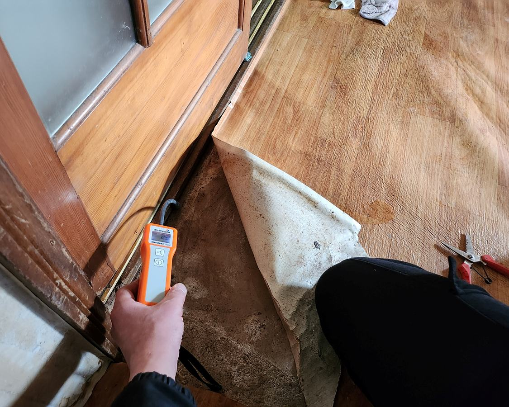
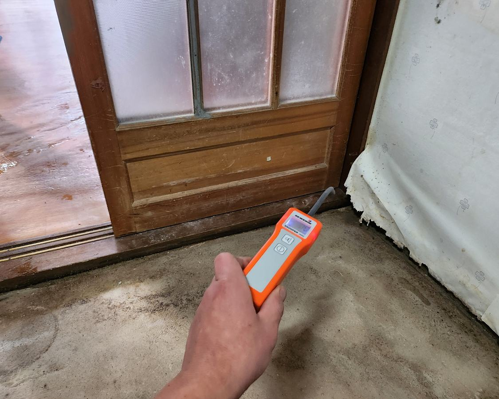
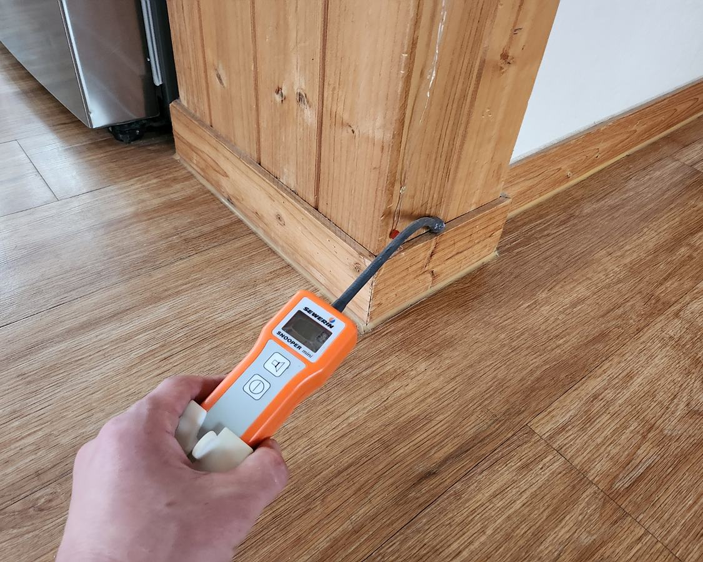

REGION LEAK GUIDE순창 누수탐지, 수도·온수·난방배관과 방수누수를 구분해 확인합니다
주택·상가에서 발생하는 수도요금 증가, 보일러 압력 저하, 아래층 천장 물샘과 벽·바닥 습기는 원인이 다를 수 있습니다. 계통별 확인 후 필요한 탐지 장비를 선택합니다.
010-4833-3447 상담
누수 진단 기본 순서
유선 증상 확인
계량기·압력시험
열화상·가스탐지
청음 정밀 확인
최소 범위 보수·재검증
누수 증상 상담
건물 유형, 피해 위치, 계량기 변화와 보일러 압력 상태를 알려주시면 점검 방향을 안내합니다.
전화 상담
REVENUE CLUSTER
순창누수탐지 연관 증상과 실제 자료
순창수도배관누수·온수배관누수·난방배관누수·보일러누수·천장누수는 계통별 검사 결과를 비교해야 합니다. 아래 사례와 대표 패턴에서 실제 진단 순서를 확인할 수 있습니다.
순창수도배관누수 · 순창온수배관누수 · 순창난방배관누수 · 순창보일러누수 · 순창천장누수
누수탐지 현장 이미지
아래 사진은 프로젝트에 보관된 실제 작업 이미지 중 페이지의 지역과 서비스 분류가 일치하는 자료를 우선 연결한 것입니다.

순창 누수탐지 | 수도·온수·난방배관 정밀 진단 | 슈퍼맨하수구누수 누수 원인 점검 및 탐지 과정

순창 누수탐지 | 수도·온수·난방배관 정밀 진단 | 슈퍼맨하수구누수 누수 원인 점검 및 탐지 과정

순창 누수탐지 | 수도·온수·난방배관 정밀 진단 | 슈퍼맨하수구누수 누수 원인 점검 및 탐지 과정

순창 누수탐지 | 수도·온수·난방배관 정밀 진단 | 슈퍼맨하수구누수 누수 원인 점검 및 탐지 과정
지역별 주요 배관 증상 안내
싱크대 막힘
배수가 느려지거나 역류가 반복된다면 배관 내부의 기름 슬러지, 이물질, 석회 등을 배관내시경으로 확인한 뒤 상황에 맞는 장비로 작업합니다.
변기 막힘
변기 막힘은 휴지, 물티슈, 석회, 공용배관 문제 등 원인을 먼저 확인한 뒤 적합한 장비로 안전하게 작업을 진행합니다.
배수구 막힘
바닥 배수구에 물이 오래 고이거나 악취와 기포가 반복되면 트랩 주변뿐 아니라 연결 배관 내부의 머리카락·비누 찌꺼기·슬러지 상태를 함께 확인해야 합니다. 배관내시경으로 막힘 구간을 점검한 뒤 증상에 맞춰 석션이나 배관청소를 진행하고 배수 상태를 다시 확인합니다.
맨홀 역류
맨홀에서 오수가 넘치거나 여러 배수구가 동시에 역류하면 세대 내부보다 건물 메인 오수관이나 외부 연결 배관의 정체 가능성을 먼저 살펴야 합니다. 관로와 맨홀 수위를 확인한 뒤 막힘 범위에 따라 석션 또는 고압세척을 진행하고 최종 통수 상태를 점검합니다.
오수관 막힘
오수관 막힘은 물티슈·기름 슬러지·침전물이 관로 안쪽에 누적되면서 화장실과 바닥 배수구의 동시 역류로 이어질 수 있습니다. 배관내시경으로 원인과 막힘 범위를 확인한 뒤 플렉스샤프트나 고압세척을 적용하고 작업 후 배관 내부와 배수 상태를 최종 검수합니다.